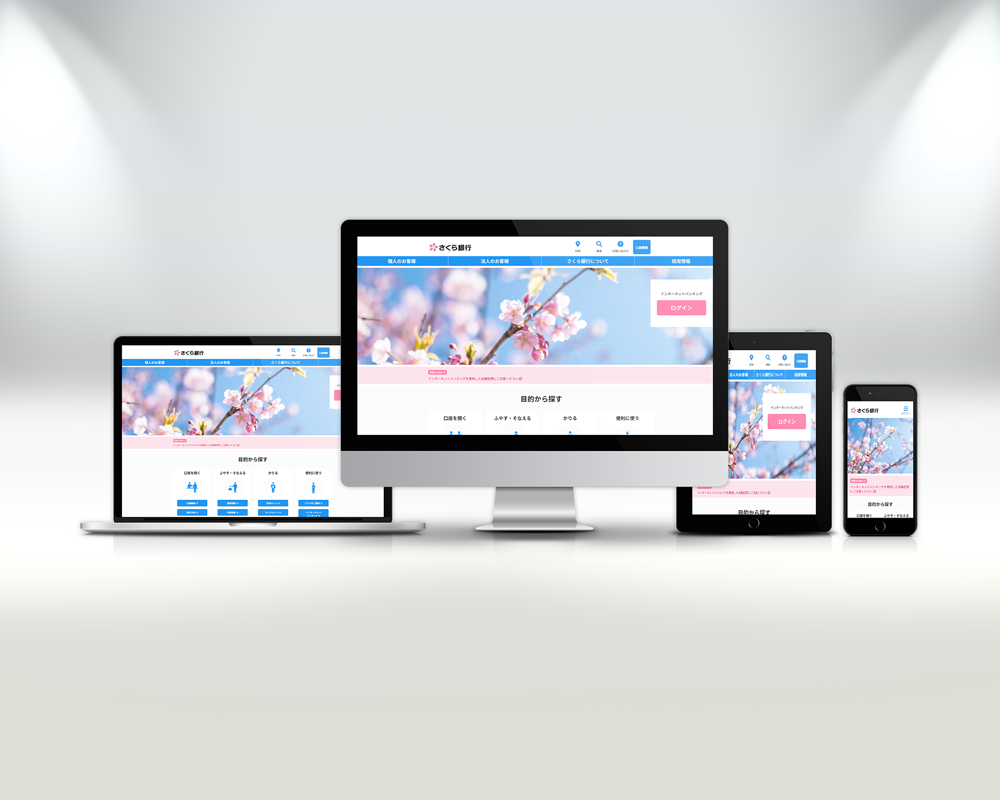

はじめに
生活基盤である銀行のサイトですので、「どこにどのような情報があるかがわかりやすい」設計を目指しました。
既存の銀行サイトを50件以上リサーチし、「お客様がアクセスしたい情報は何か」、「情報の優先順位をいかにしてつけるか」を分析。
また、カルーセルやアコーディオン、タブUIを採用することで、サイトの利便性を向上させました。
グローバルメニューを上段、下段に分けました。
上段には、「ATM」、「検索」、「お問い合わせ」のリンクを設定。
早急に悩みを解決したいお客様のストレス軽減を目的とし、この設計を採用しました。
スマートフォン版ではハンバーガーメニュー展開後のエリアに配置しております。
下段には、お客様の属性別のメニューを設置。
「個人のお客様」タブをクリックすると、サブメニューが展開される仕組みです。
サブメニューはヒーローエリアに重なり、スクロールしても位置は動かないようにしました。
ヒーローエリアについて
WEBサイトにアクセスするお客様のインターネットバンキング使用率は高いと考えます。
よって、一番目につきやすいヒーローエリアにログインボタンを設置しました。
画面の幅が変動しても対応できるように、右端からの距離は%単位で指定しています。
コンテンツエリアについて
「目的から探す」、「ライフイベントから探す」内はグリッドレイアウトを使用して横並びにしています。
今後アイテム数が増減しても対応が容易であり、アイテム同士の間隔を調整しやすいため採用しました。
「キャンペーン」エリアにはカルーセルを採用。
JavaScriptを使用して作りました。
画像をflexboxで横並びにし、1枚あたりの幅を取得。画像のインデックスに応じて移動距離が変化するようにしています。
「よくあるご質問」エリアにはアコーディオンを採用。
こちらもJavaScriptを使用しています。
矢印ボタンを押した際に向きを上下にアニメーションさせることで、開閉のステータスをわかりやくしています。
「お知らせ・ニュースリリース」エリアにはタブUIを採用しました。
２項目を同時に並べてしまうとスクロール量が増え、お客様にとってストレスになってしまうと考えたからです。
SNSアイコンは、四角形の中にアイコンを配置した後に円形にくりぬいています。
フッター内メニューは、お客様の目的別のリンクを配置し、主要サービスにアクセスしやすくしています。